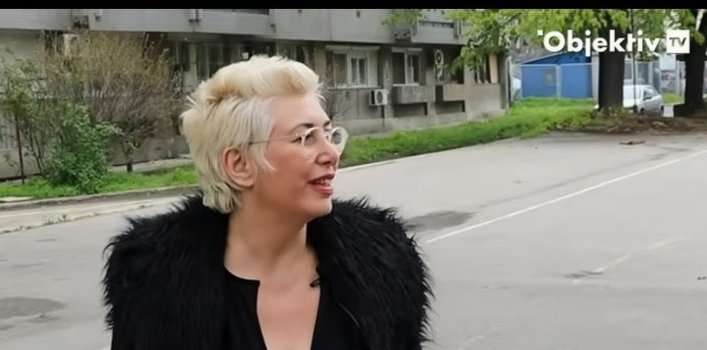
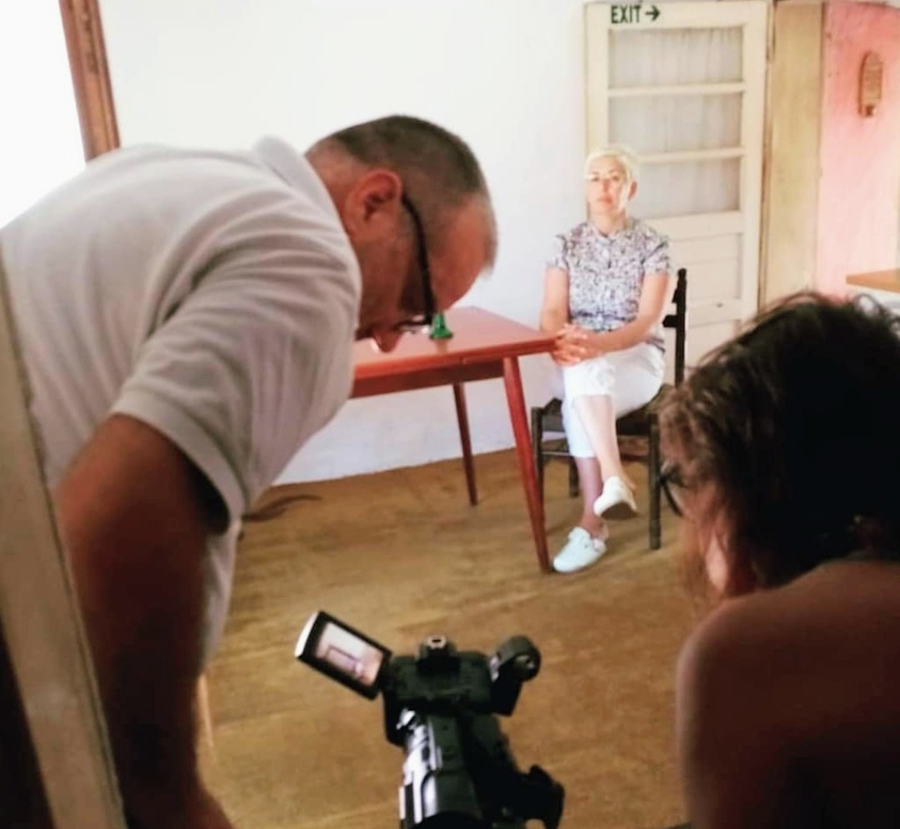
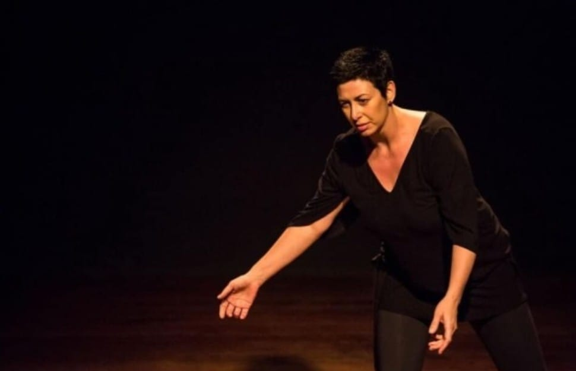
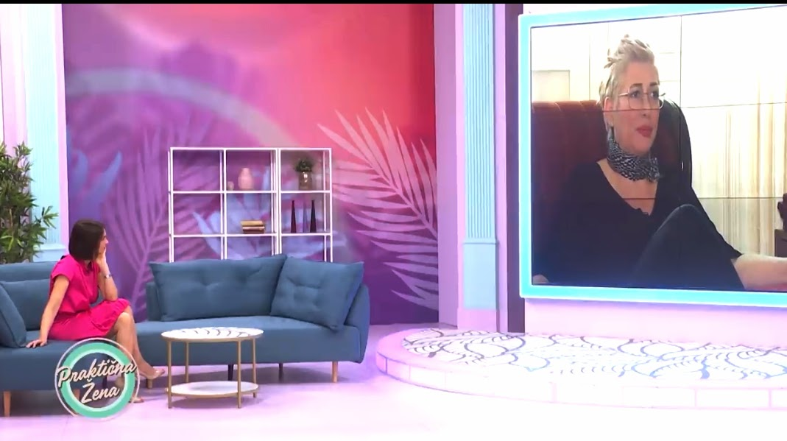
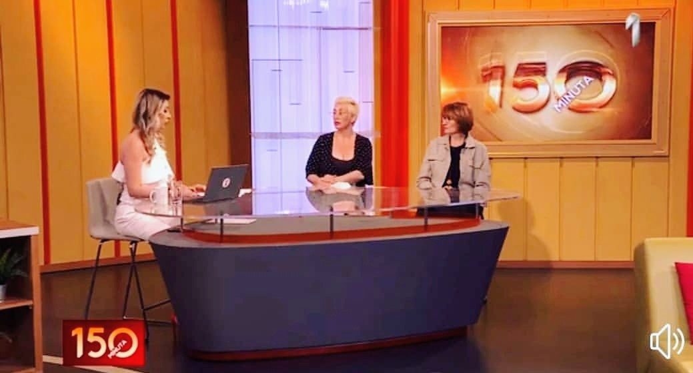
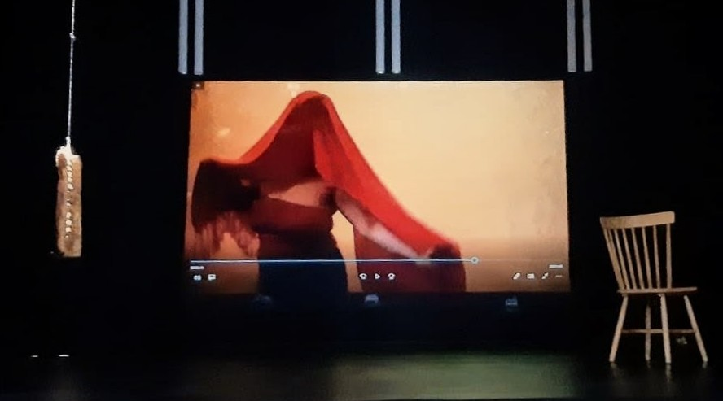
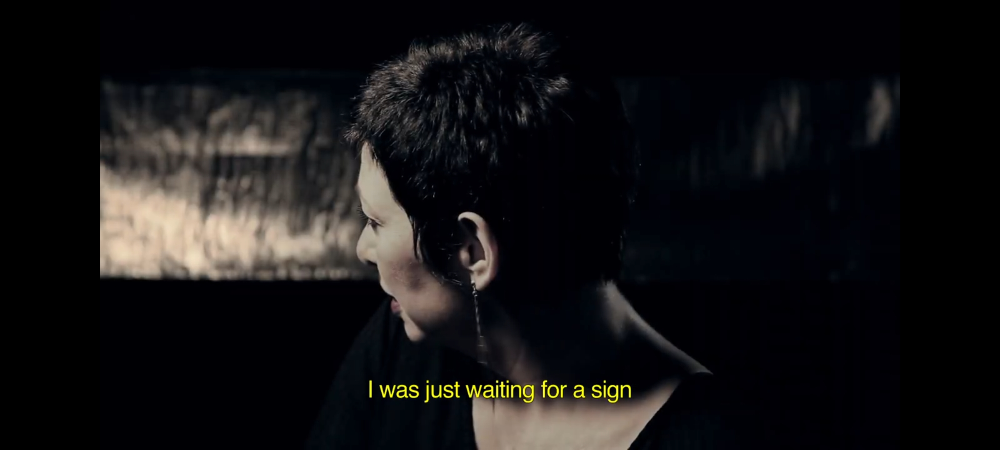

FROM SURVIVAL TO STRENGTH.
FROM SILENCE TO IMPACT.
A story of resilience, transformation and the power to rebuild a life — and inspire others to believe in their own.
Uma história de duas décadas de silêncio — e a decisão de finalmente falar.
Aos 21 anos, Nevena confiou na promessa de um futuro melhor fora da Sérvia. O que encontrou foi cativeiro e exploração — uma experiência que levaria mais de vinte anos para conseguir contar em voz alta.
Hoje ela leva sua história a programas de TV, palcos e conversas com outras sobreviventes, com um objetivo simples: transformar a dor em remédio, mostrando que é possível reconstruir uma vida inteira depois do pior capítulo dela.

O convite
Uma promessa de trabalho e uma vida melhor fora do país — e a decisão de confiar em alguém conhecido.
O cativeiro
Dois anos sem documentos, sem liberdade, sob controle absoluto — até o resgate.
A volta
O retorno à Sérvia e mais de vinte anos reconstruindo uma vida em silêncio, longe dos holofotes.
A voz
A decisão de romper o silêncio — entrevistas, palestras, e a escolha de se ver como sobrevivente, não vítima.

I AM MORE THAN MY STORY.
My life has taken me through experiences that changed the way I see people, resilience and the human capacity to survive.
For many years, I carried a story that was difficult to speak about. Today, I choose to transform that experience into something meaningful.
I speak because I believe that sharing a story can create understanding, challenge stigma and remind someone that their past does not have to define their future.
My journey is not only about what happened to me.
It is about who I became.
SPEAKING WITH PURPOSE.
I speak to audiences about resilience, transformation, empowerment and the courage to reclaim your voice.
My talks are rooted in lived experience and designed to create connection, reflection and hope.
Speaking formats:
- Keynote speeches
- International conferences
- Panels
- NGO and institutional events
- Awareness campaigns
- Workshops
- Podcasts & interviews
- Media appearances
FOR ORGANIZATIONS MAKING A DIFFERENCE
I collaborate with organizations, NGOs, institutions, conferences and initiatives working to create a more informed, compassionate and empowered society.
My lived experience brings a human perspective to conversations that are often discussed through statistics, policies and institutions.
I believe that personal stories have the power to create connection where statistics cannot.
- International conferences
- Advocacy events
- Awareness campaigns
- Survivor-centered initiatives
- Educational programs
- Panels and roundtables
- Interviews
- Public speaking engagements
USING MY VOICE FOR CHANGE.
I believe that raising awareness is not simply about telling difficult stories.
It is about changing the way society understands vulnerability, survival, stigma and human resilience.
My goal is to use my voice to contribute to conversations that can create awareness, understanding and meaningful change.




Para entrevistas, palestras ou apoio a outras sobreviventes.
- Conferências internacionais
- Eventos de advocacy
- Campanhas de conscientização
- Painéis e mesas-redondas
- Entrevistas e podcasts
- Palestras